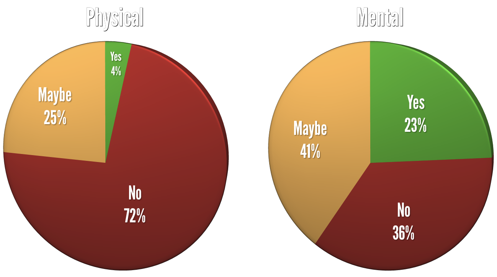
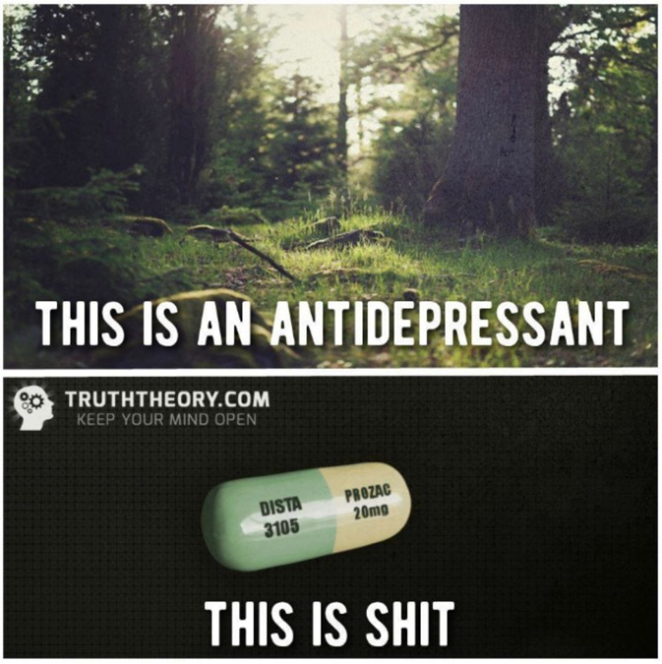
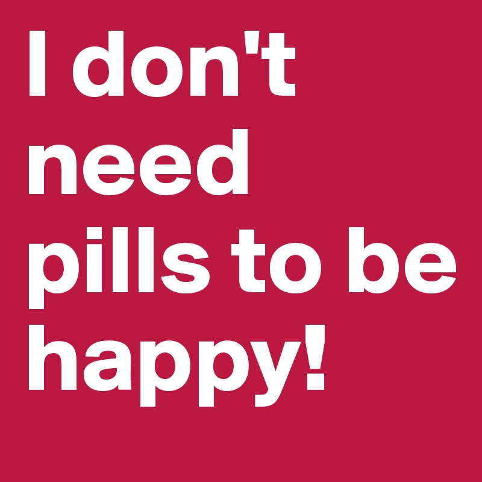
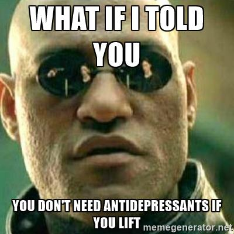

<!doctype html>
<html lang="en">
    <head>
        <meta charset="utf-8">
        <title>Erasing the Stigma</title>
        <link rel="stylesheet" href="./css/reveal.css">
        <link rel="stylesheet" href="./theme/osmi.css" id="theme">
        <link rel="stylesheet" href="./css/highlight/zenburn.css">
        <link rel="stylesheet" href="./css/print/paper.css" type="text/css" media="print">

    </head>
    <body>

        <div class="reveal">
            <div class="slides"><section  data-markdown><script type="text/template">

# ERASING THE STIGMA
## YOU'RE NOT ALONE

J.D. Flynn, Drupal Technical Architect at Blast Radius

@JDDoesDev • D.O: Dorficus • Slack: Dorf

Twin Cities Drupal Camp • #tcdrupal • #osmi

</script></section><section  data-markdown><script type="text/template">

# ABOUT ME

<aside class="notes"><ul>
<li>Name</li>
<li>Drupal/PHP Developer for 4 years</li>
<li>Doing HTML since the 90s</li>
<li>Midcamp Organizer</li>
<li>Paramedic for 10 years</li>
</ul>
</aside></script></section><section  data-markdown><script type="text/template">

## I am not a mental health professional.  I am just a guy trying to open the conversation by telling my story.

<aside class="notes"><p>Preface the rest of this with a disclaimer</p>
</aside></script></section><section  data-markdown><script type="text/template">

# ABOUT THIS SESSION

<aside class="notes"><p>There are a few things that I want to accomplish with this talk.</p>
<ul>
<li>Open up the conversation about mental illness<ul>
<li>This is pretty important.  People don&#39;t want to talk about mental illness.</li>
</ul>
</li>
<li>Share some resources and statistics</li>
<li>Share some experiences, both personal and professional</li>
<li>Try out public speaking
This should be focused on why you&#39;re doing this talk, not why you&#39;re talking about it
Also, take a first-time selfie</li>
</ul>
</aside></script></section><section  data-markdown><script type="text/template">

# QUESTION TIME

### AKA Unexpected audience participation

<aside class="notes"><p>This is where you ask about</p>
<ul>
<li>developers, PMs, HR</li>
<li>diabetes, HTN, flu, etc</li>
</ul>
</aside></script></section><section  data-markdown><script type="text/template">

# How many of you are developers?

<aside class="notes"><p>Or themers, or site builders, or anything directly related to the tech</p>
</aside></script></section><section  data-markdown><script type="text/template">

# How many of you are project managers?

<aside class="notes"><p>or account managers or similar</p>
</aside></script></section><section  data-markdown><script type="text/template">

# How many of you are in HR?

</script></section><section  data-markdown><script type="text/template">

# How many of you are in upper management?

<aside class="notes"><p>Managers, Presidents, CEOs, etc.</p>
</aside></script></section><section  data-markdown><script type="text/template">

# Who here has taken a sick day?

</script></section><section  data-markdown><script type="text/template">

## Who has been afraid to call off for physical illnesses?

<aside class="notes"><p>Injuries - broken bones, etc.
Infections - Flu, cough, cold, etc.</p>
</aside></script></section><section  data-markdown><script type="text/template">

## Who thinks it would be alright to tell someone with glasses or contacts to try looking harder?

</script></section><section  data-markdown><script type="text/template">

## Who thinks it would be alright to tell someone in a wheelchair that they should just get over it and walk?

</script></section><section  data-markdown><script type="text/template">

## Who thinks it would be alright to tell someone with diabetes, high blood pressure, or a heart condition to stop taking their medicine?

</script></section><section  data-markdown><script type="text/template">

# WHY TALK ABOUT THIS?

<aside class="notes"><ul>
<li>Paramedic for 10 years, EMT and firefighter before that</li>
<li>I&#39;ve seen firsthand what untreated mental illness can do</li>
<li>Consider anecdotes from the ambulance, but nothing too drastic or depressing.</li>
<li>And because...</li>
</ul>
</aside></script></section><section  data-markdown><script type="text/template">

# I have mental illness

<aside class="notes"><p>And because...</p>
</aside></script></section><section  data-markdown><script type="text/template">

## Burden of mental disorders is the _largest_ of all disorder categories in North America - WHO 2008

<aside class="notes"><p>But above all else...</p>
</aside></script></section><section  data-markdown><script type="text/template">

# **IT NEEDS TO BE TALKED ABOUT**

<aside class="notes"><ul>
<li>The conversation needs to be started</li>
<li>The stigma needs to be erased</li>
</ul>
</aside></script></section><section  data-markdown><script type="text/template">

# WHY IS THIS IMPORTANT TO ME?

</script></section><section  data-markdown><script type="text/template">

## I have mental illness

<aside class="notes"><p>As I mentioned before, I have mental illnesses</p>
</aside></script></section><section  data-markdown><script type="text/template">

## I suffered in silence

<aside class="notes"><p>For a very long time I was in denial.  I was afraid that admitting I had an illness would make it real</p>
<ul>
<li>Perfect health until doctor tells you otherwise</li>
</ul>
</aside></script></section><section  data-markdown><script type="text/template">

## When I tell people, sometimes they treat me differently

<aside class="notes"><p>Sometimes they walk or back away, sometimes they start treating me more delicately.  No need to walk on eggshells around me.</p>
</aside></script></section><section  data-markdown><script type="text/template">

## _**I'm not defective; I have a disease**_

<aside class="notes"><ul>
<li>Definitely focus on it not being a personality quirk, but illness</li>
</ul>
</aside></script></section><section  data-markdown><script type="text/template">

# TIME TO GET UNCOMFORTABLY PERSONAL

</script></section><section  data-markdown><script type="text/template">

## Major Depression

<aside class="notes"><p>Clinical <em>depression</em> is marked by a <em>depressed mood most of the day</em>, sometimes particularly in the morning, and a <em>loss of interest</em> in normal activities and relationships -- symptoms that are present <em>every day</em> for at <em>least 2 weeks</em> - WebMD</p>
</aside></script></section><section  data-markdown><script type="text/template">

## Anxiety Disorder

<aside class="notes"><p>A mental health disorder characterized by feelings of <em>worry, anxiety, or fear</em> that are strong enough to <em>interfere with</em> one&#39;s <em>daily activities</em> - Mayo Clinic</p>
</aside></script></section><section  data-markdown><script type="text/template">

## PTSD

<aside class="notes"><ul>
<li>A disorder characterized by <em>failure to recover</em> after experiencing or witnessing <em>a terrifying event</em> - Mayo Clinic</li>
<li>Consider mentioning some ambulance things, firefighter things, and generalize childhood.  Give the &quot;RAM v HDD&quot; metaphor</li>
</ul>
</aside></script></section><section  data-markdown><script type="text/template">

# What changed?

</script></section><section  data-markdown><script type="text/template">

# I GOT TREATMENT
<aside class="notes"><ul>
<li>I take medication<ul>
<li>Better living through chemistry</li>
</ul>
</li>
<li>I see a therapist<ul>
<li>I&#39;m currently between therapists, but looking.  Turns out Indiana isn&#39;t full of reputable therapists</li>
</ul>
</li>
<li>I find outlets. Mention community band, becoming active in the community through teaching</li>
<li>I start the conversation
Mention not being shy about talking about it.
People don&#39;t need to know the details of your PTSD, but that you&#39;re not afraid to mention it in social situations.
If other people are uncomfortable about it, that&#39;s their problem.  Mention something about talking openly at events.</li>
</ul>
</aside></script></section><section  data-markdown><script type="text/template">

# WHAT WAS LIFE LIKE BEFORE I SOUGHT TREATMENT?

</script></section><section  data-markdown><script type="text/template">

## Difficult

<aside class="notes"><p>In a word, difficult.  Afraid to see a therapist because I thought that would make it real.</p>
</aside></script></section><section  data-markdown><script type="text/template">

## Deep, deep valleys

<aside class="notes"><ul>
<li>I mess up everything I touch</li>
<li>Small losses overshadow huge wins</li>
<li>But no high peaks indicative of bipolar.</li>
</ul>
</aside></script></section><section  data-markdown><script type="text/template">

## Complete inability to focus

<aside class="notes"><p>Also mention:</p>
<ul>
<li>crippling fear of everyday things</li>
<li>constantly in fear of losing my job because of reduced output due to depression</li>
<li>spent a lot of time trying to figure out what was wrong with me</li>
</ul>
</aside></script></section><section  data-markdown><script type="text/template">

## Alone

<aside class="notes"><ul>
<li>Feel alone in crowded spaces</li>
<li>Always feel like people are looking at me for any flaws</li>
<li>Example:  On the train i hope nobody sits next to me, but i wonder what&#39;s wrong with me when nobody sits next to me</li>
</ul>
</aside></script></section><section  data-markdown><script type="text/template">

# How has treatment affected me?

</script></section><section  data-markdown><script type="text/template">

## The valleys aren't as deep
<aside class="notes"><p>Not to say they aren&#39;t around anymore or that I don&#39;t have deep valleys, but they are much less frequent than before.</p>
</aside></script></section><section  data-markdown><script type="text/template">

## I'm not ashamed of who I am
<aside class="notes"><p>Before, I wanted to hide in shame because of who I am and my conditions.  I&#39;ve since realized that it&#39;s just part of me.</p>
</aside></script></section><section  data-markdown><script type="text/template">

## My anxiety has gone down, but still rears its ugly head occasionally

<aside class="notes"><p>Since getting on medication and seeing a therapist, I&#39;ve become more comfortable in social situations, although still introverted, and I don&#39;t have nearly as many anxiety attacks or times when I am unreasonably afraid of doing something that other people find normal</p>
</aside></script></section><section  data-markdown><script type="text/template">

## Not alone

<aside class="notes"><ul>
<li>Since getting diagnosed and erasing stigma from myself I&#39;ve realized I&#39;m not alone</li>
<li>I realized that I was afraid because of the way people viewed me</li>
<li>I don&#39;t feel that way anymore because of organizations like OSMI</li>
</ul>
</aside></script></section><section  data-markdown><script type="text/template">


# WHAT IS MENTAL ILLNESS?

<aside class="notes"><p>Now I&#39;ve been going on for a while about how mental illness has affected me, but what is mental illness?</p>
</aside></script></section><section  data-markdown><script type="text/template">

Mental illness refers to a _wide range_ of _mental health_ conditions — disorders that affect _your mood, thinking and behavior_. Examples of mental illness include _depression, anxiety disorders, schizophrenia, eating disorders and addictive behaviors_. - Mayo Clinic

</script></section><section  data-markdown><script type="text/template">

# SEVERE LACK OF RESEARCH

<aside class="notes"><p>Although it was suspected that there was a higher incidence of mental illness in the tech community, there was no specific tech community research done.  Sites like devpression.com and word of mouth were all there were to go on</p>
</aside></script></section><section  data-markdown><script type="text/template">

## FORTUNATELY, we don't have to rely on speculation anymore... The research has been done!

<aside class="notes"><p>And is still being done</p>
</aside></script></section><section  data-markdown><script type="text/template">

<!-- .slide: data-background="./img/osmi_logo.png" data-background-size="contain" -->

## Mental Health in Tech 2016 Survey Results

As of 11/16/2016, US Residents, Non-self-employed

[osmihelp.org/research](osmihelp.org/research)

<aside class="notes"><p>This survey was done by OSMI and had approximately 1500 responses.  The survey was made available to several different communities.  All responses are self-reported.</p>
</aside></script></section><section  data-markdown><script type="text/template">

<!-- .slide: class="chartSlide" -->
Would you bring up a health issue with a potential employer at an interview?

 <!-- .element: class="fragment chart" data-fragment-index="1" -->

<aside class="notes"><p>Almost twice as many say &quot;NO&quot;</p>
</aside></script></section><section  data-markdown><script type="text/template">

<!-- .slide: class="chartSlide" -->
Does your employer provide resources to learn more about mental health issues and how to seek help?

 <!-- .element: class="fragment chart" data-fragment-index="1" -->

<aside class="notes"><p>Only 30% can say with any certainty that they know there are resources, but the highest percentage says no.</p>
</aside></script></section><section  data-markdown><script type="text/template">

<!-- .slide: class="chartSlide" -->
Do you feel that being identified as a person with a mental health issue would hurt your career?

 <!-- .element: class="fragment chart" data-fragment-index="1" -->

<aside class="notes"><p>Only 12% say &quot;no&quot;.  That speaks volumes to me.</p>
</aside></script></section><section ><section data-markdown><script type="text/template">

<!-- .slide: class="chartSlide" id="surveySlides" -->
Do you think discussing a health issue with your employer would have negative consequences?

 <!-- .element: class="fragment chart" data-fragment-index="1" -->

<aside class="notes"><p>Over 5x more think that there would <em>definitely</em> be negative consequences</p>
</aside></script></section><section data-markdown><script type="text/template">

[back](#/backSlide)

</script></section></section><section  data-markdown><script type="text/template">

<!-- .slide: class="chartSlide" -->
Have you been diagnosed with a mental health condition?

 <!-- .element: class="fragment chart" -->

<aside class="notes"><ul>
<li>This is self reported</li>
<li>Average is around 20%</li>
<li>1500 responses
-</li>
</ul>
</aside></script></section><section  data-markdown><script type="text/template">

For comparison: "In 2015, there were an estimated 43.4 million adults aged 18 or older in the United States with AMI within the past year. This number represented 17.9% of all U.S. adults." - National Institute of Mental Health

<aside class="notes"><ul>
<li>AMI - Any mental illness</li>
</ul>
</aside></script></section><section  data-markdown><script type="text/template">

# WHY IS MENTAL ILLNESS PREVALENT IN THE TECH COMMUNITY?
A few possible reasons:

<aside class="notes"><p>These are my own theories and surveys.</p>
</aside></script></section><section  data-markdown><script type="text/template">

## IMPOSTER SYNDROME

The feeling that you don't deserve to be doing what you're doing

<aside class="notes"><p>Give example of how you deal with it/are dealing with it.  Mention that it&#39;s common with people on FED slack.</p>
</aside></script></section><section  data-markdown><script type="text/template">

## ISOLATION

We're often put on projects by ourselves, work remotely, or have little interaction with coworkers

<aside class="notes"><p>Developers, at least the ones I&#39;ve dealt with, are a certain kind of people.  Sometimes we don&#39;t always relate to others the way that we see them relating to each other.  Mention how remote work, although it allows flexibility, can cause feelings of isolation.</p>
</aside></script></section><section  data-markdown><script type="text/template">

## PERFECTIONISTS

Usually, we don't like to put out crap code. We prefer things to be perfect, but...

</script></section><section  data-markdown><script type="text/template">

## WORK NEVER ENDS

We have job security, but there are always bugs, feature requests, or any number of issues that keep projects from ever being complete.

<aside class="notes"><p>By the time you get to a point where you think you&#39;re done and your issue queue is empty, it&#39;s time for a reskin or rebuild.  For those of us who are completionists, this can be really stressful</p>
</aside></script></section><section  data-markdown><script type="text/template">

## Regardless of the cause, one thing remains the same

</script></section><section  data-markdown><script type="text/template">

# We're afraid to talk about mental illness

</script></section><section  data-markdown><script type="text/template">

## Why are we afraid?  It's because of the stigma.

</script></section><section  data-markdown><script type="text/template">

### Images like this



</script></section><section  data-markdown><script type="text/template">

### This...



</script></section><section  data-markdown><script type="text/template">

### And this...



</script></section><section  data-markdown><script type="text/template">

## They all pretty much say the same thing

<aside class="notes"><ul>
<li>You&#39;re not trying hard enough</li>
<li>Personally, I can vouch for the effects of antidepressants</li>
<li>Remember those questions earlier?</li>
</ul>
</aside></script></section><section ><section data-markdown><script type="text/template">

## What if people with physical health problems were treated the way people with mental health problems were treated?

</script></section><section data-markdown><script type="text/template">


</script></section><section data-markdown><script type="text/template">


</script></section><section data-markdown><script type="text/template">


</script></section><section data-markdown><script type="text/template">

Source:  ATTN: https://www.youtube.com/watch?v=Bor9xVnbIz8

</script></section></section><section  data-markdown><script type="text/template">

## So how do we Erase the Stigma?

</script></section><section  data-markdown><script type="text/template">

## We need to be...

</script></section><section  data-markdown><script type="text/template">

# __STRONGER THAN FEAR__
<!-- .slide: data-background="./img/osmi_logo.png" data-background-size="contain" -->

</script></section><section  data-markdown><script type="text/template">

# Start the conversation

</script></section><section  data-markdown><script type="text/template">

# Listen

<aside class="notes"><p>If someone trusts you enough to talk about their mental health, listen.</p>
</aside></script></section><section  data-markdown><script type="text/template">

# Let people know they matter

<aside class="notes"><p>As someone with a disability, hearing an affirmation can do amazing things</p>
</aside></script></section><section  data-markdown><script type="text/template">

# Don't be ashamed

<aside class="notes"><p>If you have a mental illness, you&#39;re not damaged; you have a disease</p>
</aside></script></section><section  data-markdown><script type="text/template">

# Be respectful

<aside class="notes"><p>You can&#39;t always tell who has a disability.  Try to be respectful of what you say or how you portray diseases.</p>
<p>If you do feel that you have a disease, get treatment!</p>
</aside></script></section><section  data-markdown><script type="text/template">

## This is all good for personal relationships, but what about the workplace?

Remember when we talked about it [here](#/surveySlides)?

</script></section><section  data-markdown><script type="text/template">

<!-- .slide: id="backSlide" -->
## We're afraid that being honest will have negative consequences

For many of us, this means suffering in silence

<aside class="notes"><p>Possible anecdote about recent situation at old job.</p>
</aside></script></section><section  data-markdown><script type="text/template">

## We're afraid coworkers will change their opinion of us

<aside class="notes"><p>Especially as someone with anxiety, worrying what people think can drive you mad</p>
</aside></script></section><section  data-markdown><script type="text/template">

## Some of our minds go straight to the worst case scenario

<aside class="notes"><p>Mention email of &quot;we need to talk&quot; on 89th day of 90 day probation and &quot;password incorrect&quot; email error at current job</p>
</aside></script></section><section  data-markdown><script type="text/template">

## We're araid we might get sent to the ~~principal's&nbsp;office~~ HR Department

<aside class="notes"><p>Mention how it took you a lot to build up the courage to tell your bosses about your illness only to get a call from HR.  From people you deal with every day to someone who might as well be a stranger.</p>
</aside></script></section><section  data-markdown><script type="text/template">

## Why should a workplace care?

</script></section><section  data-markdown><script type="text/template">

## Ignorance kills productivity

## Reduced productivity kills the bottom line

<aside class="notes"><ul>
<li>This goes both ways.  </li>
<li>Before treatment I would have stretches where I didn&#39;t accomplish anything</li>
<li>That would lead to anxiety about not getting anything done</li>
<li>Job insecurity</li>
<li>Management didn&#39;t know how to handle</li>
<li>HR didn&#39;t want to hear</li>
</ul>
</aside></script></section><section  data-markdown><script type="text/template">

# Fight ignorance with information

<aside class="notes"><p>mention the exit interview and sending a link to OSMI</p>
</aside></script></section><section  data-markdown><script type="text/template">

## Get the OSMI handbooks

# http://bit.ly/osmi-books <!-- .element: class="fragment" data-fragment-index="1" -->

<aside class="notes"><p>Not trying to sell anything, but the books are DRM free and extremely useful</p>
</aside></script></section><section  data-markdown><script type="text/template">

## The tech community is our greatest resource

<aside class="notes"><p>Time to bring it home --
Especially in open source communities</p>
</aside></script></section><section  data-markdown><script type="text/template">

## *__50%__* of survey respondents claimed mental illness diagnoses

<aside class="notes"><p>So what does that mean?</p>
</aside></script></section><section  data-markdown><script type="text/template">

# We are not alone

</script></section><section  data-markdown><script type="text/template">

# We are more than usernames

</script></section><section  data-markdown><script type="text/template">

# We are real people

</script></section><section  data-markdown><script type="text/template">

# We are not damaged

<aside class="notes"><p>And with a little work, together we can be....</p>
</aside></script></section><section  data-markdown><script type="text/template">

# Stronger than fear
<!-- .slide: data-background="./img/osmi_logo.png" data-background-size="contain" -->

</script></section><section  data-markdown><script type="text/template">

#### Some resources available:
- osmihelp.org
- Find a therapist: 1-800-THERAPIST
- National Association on Mental Illness: 1-800-950-NAMI
- Suicide Lifeline: 1-800-273-8255

</script></section><section  data-markdown><script type="text/template">

### Special thanks to:
- OSMI
- Ed Finkler (@Funkatron) and everyone else on the OSMI Slack
- Everyone who helped me open the conversation
- TCDrupal

</script></section><section  data-markdown><script type="text/template">

# Thank you for listening

Slides available at https://slides.dorfs.website/mental-health/

</script></section><section  data-markdown><script type="text/template">

# Questions?

</script></section><section  data-markdown><script type="text/template">
</script></section></div>
        </div>

        <script src="./lib/js/head.min.js"></script>
        <script src="./js/reveal.js"></script>

        <script>
            function extend() {
              var target = {};
              for (var i = 0; i < arguments.length; i++) {
                var source = arguments[i];
                for (var key in source) {
                  if (source.hasOwnProperty(key)) {
                    target[key] = source[key];
                  }
                }
              }
              return target;
            }

            // Optional libraries used to extend on reveal.js
            var deps = [
              { src: './lib/js/classList.js', condition: function() { return !document.body.classList; } },
              { src: './plugin/markdown/marked.js', condition: function() { return !!document.querySelector('[data-markdown]'); } },
              { src: './plugin/markdown/markdown.js', condition: function() { return !!document.querySelector('[data-markdown]'); } },
              { src: './plugin/highlight/highlight.js', async: true, callback: function() { hljs.initHighlightingOnLoad(); } },
              { src: './plugin/zoom-js/zoom.js', async: true },
              { src: './plugin/notes/notes.js', async: true },
              { src: './plugin/math/math.js', async: true }
            ];

            // default options to init reveal.js
            var defaultOptions = {
              controls: true,
              progress: true,
              history: true,
              center: true,
              transition: 'default', // none/fade/slide/convex/concave/zoom
              dependencies: deps
            };

            // options from URL query string
            var queryOptions = Reveal.getQueryHash() || {};

            var options = {};
            options = extend(defaultOptions, options, queryOptions);
            Reveal.initialize(options);
        </script>
        
    </body>
</html>
